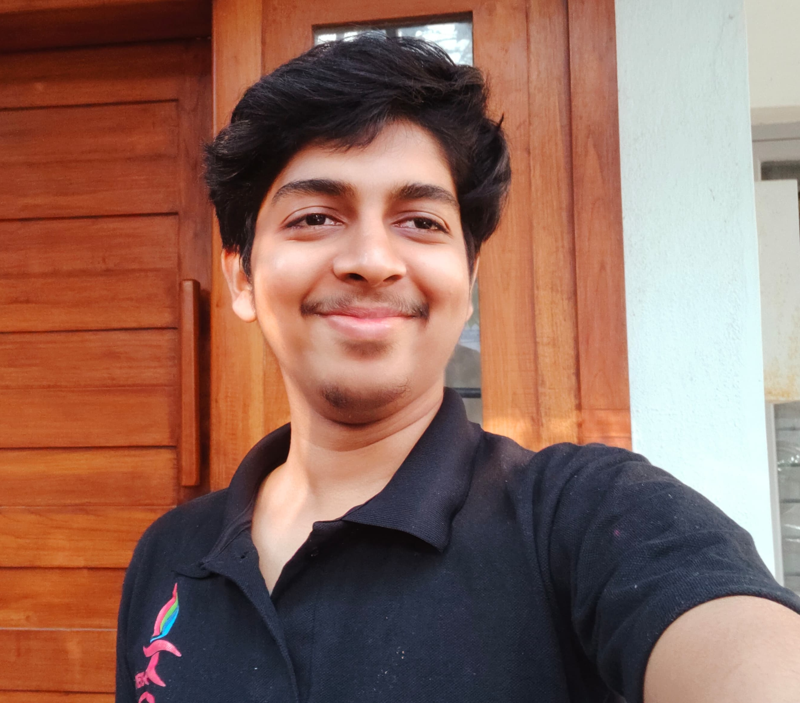

Arjun M S
Curious Guy who loves to tinker with tech and build products
I see knowledge as a toolkit to solve problems and enjoy being a jack of all trades, picking up new skills and combining them in unexpected ways. My background spans AI development, research, and community building.
Skills
Experience
-
AI Developer Consultant Current
The Apprentice Project (TAP)
Developing AI-driven solutions to improve personalized learning experiences.
-
AI Researcher
DocketGo
Researched Vector databases for law systems. Improved law point extraction accuracy by 25%.
-
Discord Bot Dev & Interest Group Lead
GTech Mulearn
Integrated chat moderation features enhancing UX for 1600+ members.
-
Campus Lead
TinkerHub Foundation
Managed a team to oversee development and engagement of 150+ students.